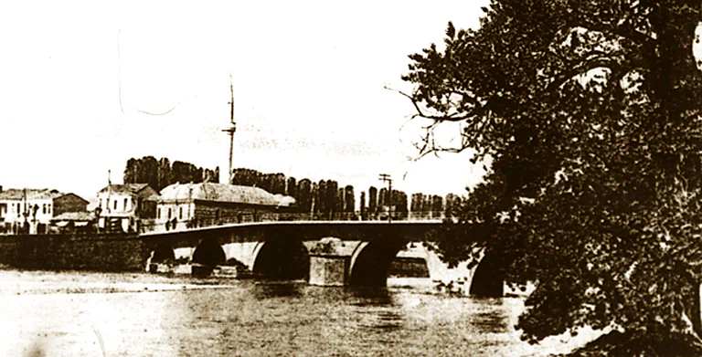
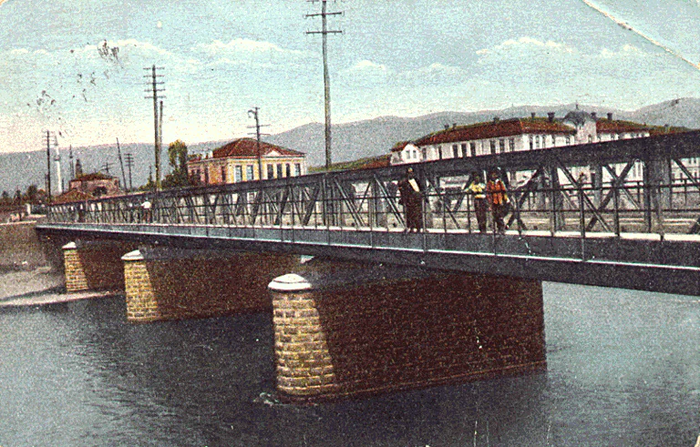

Скопие 1916 - 1917 мост
Документи от Балканските войни
- Година
- 1916-1917
- Времетраене
- 00:13

В центъра на града, над р. Вардар, е построен монументален каменен мост (популярно наричан Каменния мост). Според някои турски извори мостът е построен през втората половина на 15 век, по времето на султан Мехмед II. Според най-новите проучвания от 1990 година при реконструкцията на моста се предполага, че е построен по времето на Юстиниан I през 6 век. Изграден е от добре обработени каменни блокове, а конструкцията му стъпва на мощни стълбове, свързани с полукръгли арки - 13 на брой. През 1905 година са изградени бетонни тротоари, които преди това били покрити с дъски. През 1937 г. е разширен с конзоли, на които са преместени пешеходните пътеки. На снимката е Скопие в края на 19 век. Изглед към Каменния мост и стария чинар. Горе вдясно е скопската крепост - Кале с казармата.

Каменният мост - края на 19 век. На заден план вляво се вижда Бурмали джамия.

Каменният мост - края на 19 век. На заден план вляво се вижда Бурмали джамия.

Скопие в края на 19 и началото на 20 век (лято) - изглед към Каменния мост. На преден план е телефонен стълб с пощенска кутия. Точно до него има фенер - първата форма на градско комунално оборудване. Тъй като е лято, пешеходците се пазят от слънцето с чадъри. За превоз на товари се използвали волски каруци, а файтоните служели като обществен транспорт. Точно до моста вдясно се вижда голямо воденично колело.

Скопие в края на 19 и началото на 20 век (зима) - изглед към Каменния мост. На преден план е телефонен стълб с пощенска кутия. Точно до тях има фенер - първата форма на градско комунално оборудване. Забелязват се некалдъръмени кални улици. На заден план са Еврейската махала и скопската крепост - Кале.

Панорама на Каменния мост в началото на 20 век.

Каменният мост - около 1905 година. На заден план, горе вляво, се вижда скопската крепост - Кале с казармите. Вдясно е старият чинар.

Каменният мост в края на 19 и началото на 20 век. Горе вдясно се вижда скопската крепост - Кале.

Скопие в турския период - началото на 20 век. На снимката се вижда, че едната половина на Каменния мост е с каменен парапет, а другата с временна ограда от желязо и дърво. През 1905 година започва замяната на каменния парапет с железен. В Скопие в турския период - началото на 20 век. На снимката се вижда, че едната половина на Каменния мост е с каменен парапет, а другата с временна ограда от желязо и дърво. През 1905 година започва замяната на каменния парапет с железен. В левия ъгъл, зад Каменния мост, се вижда турският театър. Точно до моста вдясно се вижда голямо воденично колело. Вдясно е старият чинар, на който е било обесено мъртвото тяло на Карпош веднага след потушаването на Карпошовото въстание - 1689 година. На заден план изцяло се виждат скопската крепост - Кале и жилищни сгради в Еврейската махала. Интересно е беленето на платна от жените в чистите води на р. Вардар - на преден план на снимката.

Група турци на Каменния мост - началото на 20 век. Интересно е да се отбележи, че тротоарите на моста са покрити с дъски.

Железопътният мост на р. Вардар в Скопие - края на 19 век.

Каменен мост на река Пчиня - околностите на Скопие (днес не съществува). Съдейки по човека на върха на моста, височината му е около 15 метра над водата. (1910-те)

Скопие през 1902 година. На снимката се вижда дървеният мост, а зад него старото кафене „Богес“, в което се изнасяли първите театрални представления. Над него е скопската крепост - Кале с военната казарма.

Каменният мост - 1905 година. Вляво, зад него, се вижда Турският театър, а в горната част скопската крепост - Кале.

Изглед към десния бряг на р. Вардар през короната на стария чинар - около 1910 година. Обхванати са: част от Каменния мост, Бурмали джамия и дюкяните пред нея.

Скопие преди 1912 година. Каменният мост с конзоли и железен парапет. Вдясно е старият чинар, а горе се вижда скопската крепост - Кале.

Скопие по време на Балканската война. На заден план Бурмали джамия.

Изглед от част от Каменния мост към скопската крепост - Кале (около 1910 година)

Изглед към част от Каменния мост, а на заден план вляво се вижда турският театър. Над него се извисява скопската крепост - Кале. (около 1910 година)

Каменният мост с група хора на него - около 1913 година

Каменният мост на р. Вардар в Скопие - около 1913 година

Каменният мост на р. Вардар в Скопие - около 1913 година. На заден план, горе вдясно, се вижда скопската крепост - Кале.

Скопие през 1912 година - художествена картина. Каменният мост и Бурмали джамия. На заден план прекрасен зелен пояс от тополи. Забелязва се интерполация на класическа архитектура. Функцията на новите кейови пространства е нов градски елемент. Групите жилищни, търговски и занаятчийски сгради пред моста функционират и са част от композицията, с традиционни белези и елементи на европейски влияния.

Железният мост на р. Вардар в Скопие с изглед към старото училище, Св. Мина и Св. Богородица - около 1920 година.

Железният мост, построен през 1905 година. На заден план е сградата на първия Скопски университет. (1915 година)

Железният мост, построен през 1905 година. На заден план е сградата на първия Скопски университет. (1920-те.)

Железният мост на р. Вардар в Скопие, построен през 1905 година. На заден план е сградата на първия скопски университет. (1920-те)

Железният мост, построен през 1905 година. (1920-те)

Железният мост на р. Вардар в Скопие с изглед към сградите на кея „Димитър Влахов“. (1920-те)

Скопие, около 1920 г. Част от градския площад пред Каменния мост. Първите павилиони за услуги и продажби. Павилионите имат подчертана архитектура в детайлите, т.е. в оформлението на покривите. Мостът е разширен с пешеходни конзоли. На заден план горе се вижда скопската крепост - Кале.

Скопие, около 1920 г. Част от градския площад пред Каменния мост. Пред и на Каменния мост се забелязват малки постройки за информиране на гражданите с плакати. Мостът е разширен с пешеходни конзоли. На заден план, горе вляво, се вижда скопската крепост - Кале.

Каменният мост с група хора, които гледат покачилото се ниво на р. Вардар. (1920-те)

Каменният мост - 1920 година. На заден план се вижда Османската банка.

Изглед от Каменния мост към Стария град и Пайко махала с кабинета на зъболекаря д-р Рубенс и Османската банка - около 1927 година.

Изглед от Каменния мост към Стария град, чаршията и склона на Гази Баба. Точно до моста вдясно се намирал кабинетът на зъболекаря д-р Рубенс. Малко по-вдясно е сградата на Османската банка. Между тях имало малко площадче със стоянка за файтони. А в средата на площадчето бил паметникът на падналите в Балканската война - около 1927 година.

Изглед от Каменния мост към Стария град, чаршията и склона на Гази Баба. Точно до моста вдясно се намирал кабинетът на зъболекаря д-р Рубенс. Малко по-вдясно е сградата на Османската банка. Между тях имало малко площадче със стоянка за файтони. А в средата на площадчето бил паметникът на падналите борци - около 1927 година.

Изглед от Каменния мост към Стария град и Пайко махала с кабинета на зъболекаря д-р Рубен и Османската банка - около 1927 година.

Изглед към десния бряг на р. Вардар с част от моста и Офицерския дом - 1930-те. Вляво се вижда остатъкът от отсечения стар чинар, на който през 1689 година, след потушаването на въстанието, е било обесено мъртвото тяло на Карпош.

Изглед към част от Каменния мост, стария чинар и скопската крепост - Кале - около 1920 година.

Скопие, около 1920 г. Каменният мост със скопската крепост - Кале на заден план. На преден план белене на платна в чистата вода на Вардар.

Изглед към дървеното мостче и кея на десния бряг на р. Вардар. Сградите имат неокласически и барокови детайли в архитектурния израз. Улицата е днешната „Илинденска“. В редицата сгради е и Средното музикално училище. На преден план е дървеното мостче, по което се стигало до Народния театър.

Дървеното мостче на р. Вардар с Офицерския дом на заден план. До него са сградите на банката и старата поща - края на 1920-те.

Изглед към дървеното мостче на р. Вардар, а на заден план се виждат Офицерският дом, старата поща и банката - около 1930 година.

Изглед към скопската крепост - Кале с казармата. Под нея се намира Еврейската махала. На преден план е дървеното мостче - 1950-те.

Изглед към Народния театър и дървеното мостче - 1930-те.

Каменният мост - 1930-те. Народният театър на заден план, а над него скопската крепост - Кале.

Изглед към част от площада и Каменния мост. На заден план, вляво, се виждат Народният театър и скопската крепост - Кале. Забележителен е файтонът като основно превозно средство за гражданите. На преден план съборени сгради за строежа на Народната банка - около 1930 година.

Придошлата вода на р. Вардар. Мостът е до половината под вода. Снимката е направена от десния към левия бряг - 1930-те.

Реконструкция и подмяна на калдъръма на Каменния мост. Изглед към Ристичевия дворец и първите павилиони - около 1930-те.

Изглед от Каменния мост към площада. Вляво се разчиства теренът за строежа на Народната банка - 1930-те.

Изглед от левия бряг на р. Вардар към Каменния мост и Офицерския дом - 1930-те.

Каменният мост на р. Вардар - около 1930 година. На заден план се вижда Народният театър, а горе вдясно скопската крепост - Кале.

Каменният мост - 1950-те.

Част от каменния мост. На заден план се вижда хотел „Гранд“. - 1960-те

Каменният мост със скопската крепост - Кале през 1960-те, преди благоустрояването на кея.

Изглед към каменния мост и скопската крепост - Кале. (1970-те)

Каменният мост през 1970-те със средното пространство на кея.

Каменният мост и площадът през 1970-те.

Изглед от десния към левия бряг на р. Вардар, към каменния мост, част от площада и новата поща на заден план. (1970-те)

Днешният мост „Гоце Делчев“, сниман от скопската крепост - Кале. (1990-те)

Документи от Балканските войни
 Акведукт4 картички
Акведукт4 картички Кале30 картички
Кале30 картички Мостове60 картички
Мостове60 картички Кей58 картички
Кей58 картички Площад46 картички
Площад46 картички Сгради66 картички
Сгради66 картички Християнски храмове19 картички
Християнски храмове19 картички Мюсюлмански сгради33 картички
Мюсюлмански сгради33 картички Офицерски дом29 картички
Офицерски дом29 картички Театър28 картички
Театър28 картички Железопътна гара13 картички
Железопътна гара13 картички Училища36 картички
Училища36 картички Паркове12 картички
Паркове12 картички Пазари18 картички
Пазари18 картички Улици38 картички
Улици38 картички Панорама I60 картички
Панорама I60 картички Панорама II30 картички
Панорама II30 картички Колажи55 картички
Колажи55 картички Наводнения9 картички
Наводнения9 картички Земетресение27 картички
Земетресение27 картички Скопие 200026 картички
Скопие 200026 картички